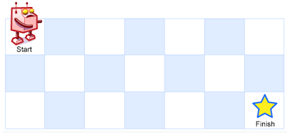

Introducción problema
Se pide el diseño de un algoritmo para calcular la cantidad de caminos únicos a través
de los cuales un robot puede mobilizarse desde el comienzo de la matiz hasta la esquina
inferior derecha de la misma, en donde sobre cada paso, el robot puede avanzar una posición
a la derecha o una posición hacia abajo pero no las dos al mismo tiempo.
Se otorgaran dos parámetros:
- Filas: Valor numérico que representa las filas que tendrá la matriz
- Columnas: Valor numérico que representa las columnas que tendrá la matriz
Visualización gráfica
La posición en la que se encuentra el robot es la posición desde la cual arranca, la estrella determina hacia donde desea ir

Ejemplo
- Parámetros
-
Respuesta: 3
- Caminos posibles
- Camino 1 = matriz[0][0] -> matriz[1][0] -> matriz[2][0] -> matriz[2][1]
- Camino 2 = matriz[0][0] -> matriz[1][0] -> matriz[1][1] -> matriz[2][1]
- Camino 3 = matriz[0][0] -> matriz[0][1] -> matriz[1][1] -> matriz[2][1]
Ejemplo B
- Parámetros
-
Respuesta: 1
- Caminos posibles
- Camino 1 = matriz[0][0] -> matriz[0][1] -> matriz[0][2] -> matriz[0][3]
Restricciones
Las restricciones que se le impondrán a la solución son las siguientes:
- Resolver el problema utilizando recursividad.
- Realizar dos soluciones, una que no utilice programación dinámica, y otra que si.
Follow-up
Se presentan los siguientes desafios como follow-up al problema:
- Analice como se ve afectada la complejidad temporal del algoritmo al pasar de una solución que
no utiliza programación dinámica hacia una que si.
- Dibuje un árbol que represente las llamadas recursivas que se realizarán en el cálculo
en donde r=3 y c=3 tanto para el caso en donde no se utiliza programación dinámica como para
el caso en el que si.
- Corra el código a través de la herramienta bajo el modo de funcionamiento que considere conveniente y
analice y compare el output de respuesta con sus predicciones.
ACLARACIÓN:En caso de precisar una explicación detallada, presione sobre el boton correspondiente.